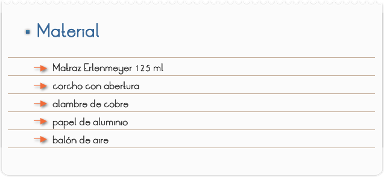
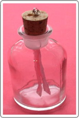
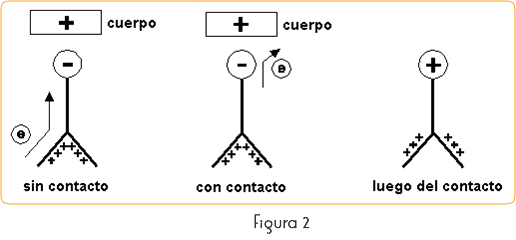
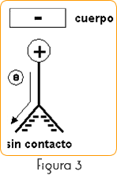
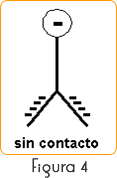

Introducción
El electroscopio es un instrumento que permite determinar la presencia de cargas eléctricas y su signo.
El electroscopio sencillo consiste en una varilla metálica vertical que tiene una bolita en la parte superior y en el extremo opuesto dos láminas de oro muy delgadas. La varilla está sostenida en la parte superior de una caja de vidrio transparente con un armazón de metal en contacto con tierra. Al acercar un objeto electrizado a la esfera, la varilla se electrifica y las laminillas cargadas con igual signo que el objeto se repelen, siendo su divergencia una medida de la cantidad de carga que han recibido. La fuerza de repulsión electrostática se equilibra con el peso de las hojas. Si se aleja el objeto de la esfera, las láminas, al perder la polarización, vuelven a su posición normal.
Objetivos
Construir un electroscopio de hojas y comprobar la existencia de la electricidad estática.

PARTE l: CONSTRUCCIÓN DEL ELECTROSCOPIO
1) Monte una esfera con papel aluminio y recorte una tira bien fina del mismo papel.
2) Introduzca el alambre en el corcho y vede bien. Conecte al alambre la esfera y la tira.
3) Seque bien el interior del frasco y proceda con el montaje (Figura1)

PARTE ll: ELECTRIZACIÓN DEL CUERPO DE PRUEBA Y CARGAMENTO DEL ELECTROSCOPIO
1. Utilice Como cuerpo de prueba el balón de aire. Frótelos intensamente contra los cabellos bien secos.
2. Observe el balón de la esfera de aluminio del electroscopio.
3. Recueste el balón en la esfera de aluminio, alejándolo. Observe.
Cuestionario
1. ¿Lo que sucede con las láminas de aluminio, cuando se aproxima el cuerpo electrizado de la esfera del electroscopio? Explique físicamente el efecto observado.
2. ¿Para qué sirve un electroscopio de hojas?
3. ¿Lo que sucede con las láminas de aluminio cuando aproximamos el cuerpo electrizado
4. Hasta tocar la esfera y enseguida lo alejamos? Explique físicamente el efecto observado.
5. ¿Por qué este experimento, no debe ser realizado en lugares donde la humedad relativa del aire es alta? ¿Por qué el interior del frasco debe estar bien seco?
Comentarios
En esta actividad, conviene comentar previamente, la estructura del átomo y los tipos de electricidad estática. Discutir la Ley de DUFAY, que rige los comportamientos de atracción y rechazo creados por los tipos de electricidad estática.
Electroscopio, es el nombre dado a cualquier dispositivo que permita verificar si un cuerpo está electrizado, o sea, si está cargado con cualquiera de los tipos de electricidad estática, positiva o negativa.
Al aproximar un cuerpo positivo, habrá una migración de electrones de la tira para la esfera. Ambos lados de la tira quedarán positivos habiendo rechazo entre ellos.

Nota: Con la aproximación del cuerpo positivo, el electroscopio en condición de neutralidad eléctrica queda polarizado: Esfera – e lámina + .
Luego del toque, el electroscopio sale de la condición de neutralidad eléctrica, quedando cargado positivamente.
Al retirar el cuerpo positivo de las proximidades de la esfera, el efecto de rechazo cesa instantáneamente. Si el cuerpo toca la esfera habrá una migración de electrones para el cuerpo, dejando el electroscopio con exceso de carga positiva.
Al retirar el cuerpo de las proximidades de la esfera, el efecto cesa lentamente, en la medida en que ella retira cargas negativas del aire, retornando el electroscopio a la condición de neutralidad eléctrica.
Cuerpo negativo y electroscopio relacionándose:

Nota: Con la aproximación del cuerpo negativo, el electroscopio en condición de neutralidad queda polarizado, esfera + lámina -.
El razonamiento es análogo al anterior, cambiando el sentido de migración de los electrones. En el caso de contacto físico entre el cuerpo negativo y la esfera, hay una migración de electrones para la esfera. El conjunto del electroscopio queda con exceso de cargas negativas.

Nota: inmediatamente luego al toque.
Al retirar el cuerpo de las proximidades de la esfera el efecto cesa lentamente, en la medida que la esfera cede electrones para el aire.
En el montaje experimental debemos tomar todo el cuidado con la humedad, pues ella retiene cargas, no tornando visible el efecto deseado. Conviene trabajar en lugar seco y tibio.
Hay la presencia de agentes higroscópicos, como el silicio, previamente calentado (azul) en el fondo del Erlenmeyer.